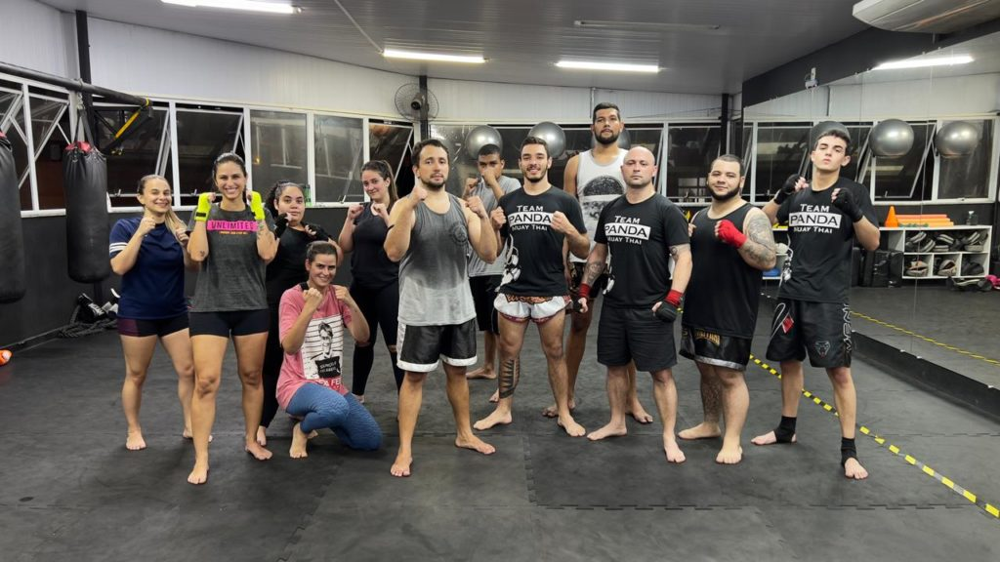
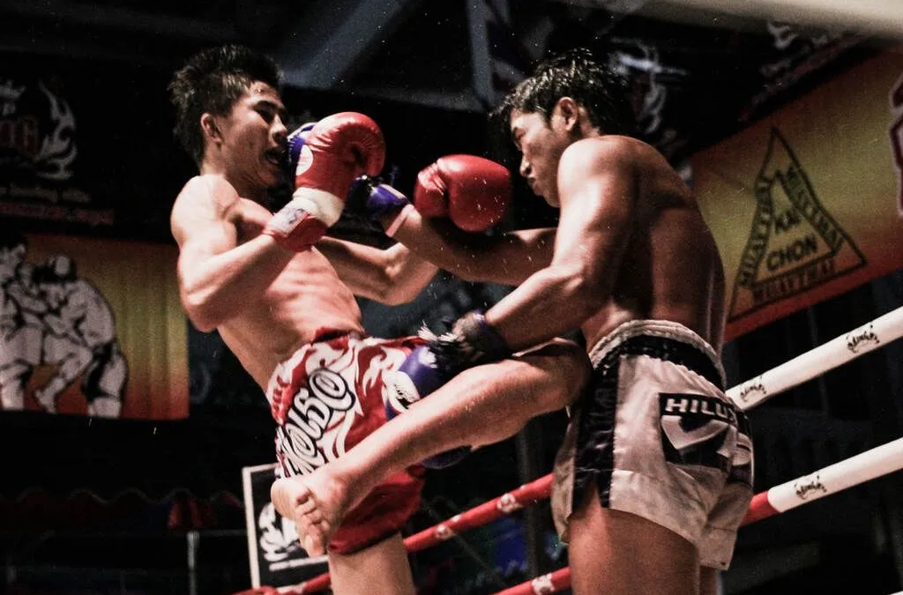
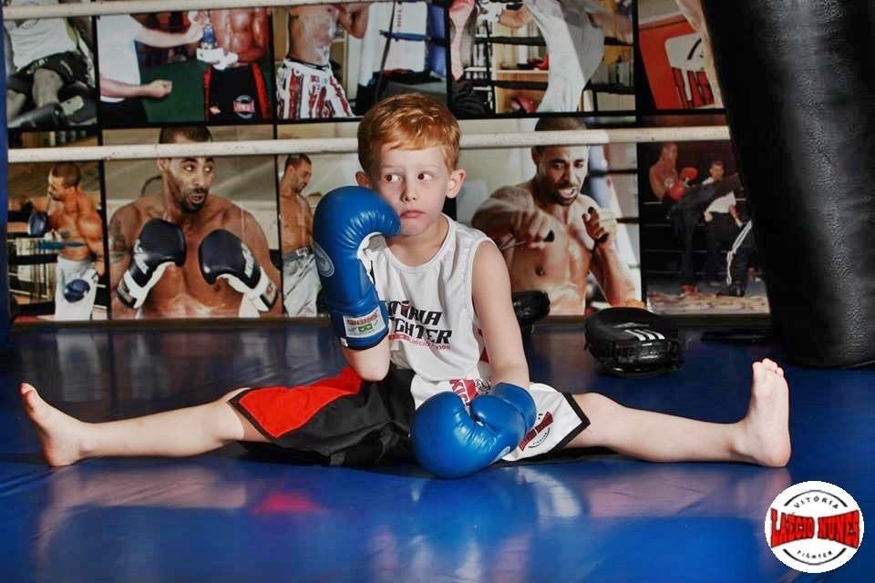
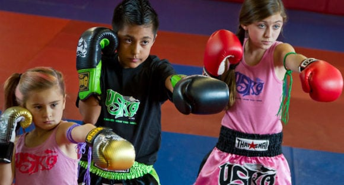
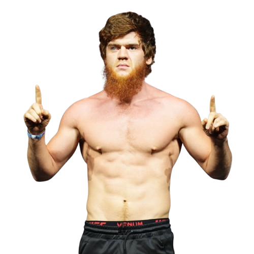

Espírito de Luta - Muay Thai
Bem-vindo ao Espírito de Luta - Muay Thai
A imagem exibida muda conforme o tamanho da tela.
Aqui não é só uma academia. É um espaço onde se constrói caráter, se fortalece o corpo e se desperta a mente.
No Espírito de Luta, acreditamos que cada treino é uma oportunidade de superação.
Seja você um iniciante ou um guerreiro experiente, aqui é o seu lugar.
Com base na disciplina, respeito e espírito de comunidade, treinamos não apenas campeões nos ringues,
mas também pessoas mais fortes para a vida. Explore nosso site e descubra como o Muay Thai pode transformar o seu caminho.
Treinos

Iniciante
Comece com o pé direito. Aprenda as bases do Muay Thai com segurança e confiança.

Intermediário
Evolua seu jogo com técnicas mais avançadas e treinos mais intensos.

Avançado
Aprofunde-se na arte. Aqui, o foco é excelência, estratégia e performance.

Feminino
Um ambiente de força e acolhimento, com treinos adaptados e foco em empoderamento.

Treino para Idosos
Mobilidade, equilíbrio e leveza.

Treino de Competição (Performance Avançada)
Alta performance e preparação para campeonatos.

Muay Thai Cognitivo (Deficiência Intelectual ou Autismo)
Repetição com estímulo visual e auditivo. Ritmo mais lento, reforço positivo.

Infantil
Disciplina, foco e diversão. Para formar desde cedo guerreiros conscientes.
Sobre a Academia🏯
Painel de Fotos - Academia
Nossa história é feita de lutas, vitórias e união
O Espírito de Luta - Muay Thai nasceu do desejo de compartilhar muito mais que uma arte marcial — queremos compartilhar valores.
Fundada por apaixonados pela cultura tailandesa e pelo poder transformador do Muay Thai, nossa academia é um reflexo da tradição com os pés no presente.
Aqui, acreditamos que cada aluno é único e cada treino é uma chance de evolução. Nossa missão é formar pessoas mais fortes, dentro e fora do tatame. Nosso diferencial está no olhar humano, na técnica refinada e na vibração que só quem treina aqui conhece.
Mestres🧠⚔️
👊 Guias no caminho da arte e da disciplina
Nossos mestres são mais do que técnicos — são verdadeiros mentores. Com anos de prática e dedicação ao Muay Thai,
eles unem conhecimento tradicional, vivência em competições e paixão pelo ensino.
Com formações reconhecidas e uma filosofia baseada na evolução individual, cada mestre busca entender o ritmo de
cada aluno, incentivando seu crescimento com respeito, firmeza e inspiração.
A relação mestre-aluno é de confiança, troca e construção. Aqui, você vai encontrar mais que um professor —
vai encontrar alguém que acredita no seu potencial.
 (2).png)
Mestre Jhonny Bravo
30 anos de experiência. Especialista em Muay Thai tradicional e competições internacionais.

Mestre Karina
Referência em Muay Thai feminino. Ensina com foco na autoconfiança e disciplina.

Mestre Shara Magomedov
Treinador de atletas profissionais e amadores. Mistura técnica, motivação e energia!